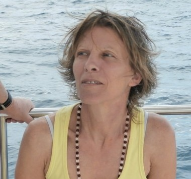
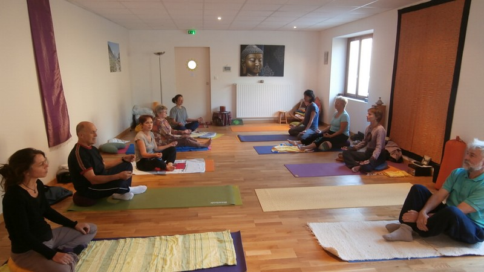

Sylvie Guitton-Maire
Formée à l'Ecole de Yoga de l'Energie, UNITE ET HARMONIE.
Formateur Giorgio CAMMARATA
Qu'est ce que le Yoga de l'Energie? C'est un Hatha-Yoga adapté aux occidentaux par Monsieur Roger CLERC.
La pratique régulière du yoga favorise :
- Une meilleure santé physique grâce aux postures qui permettent d'entretenir, assouplir votre corps : mobilité, flexibilité, tonification des muscles, du squelette...
- Une meilleure respiration, en conscience, pour apprendre à sentir, ressentir son corps afin de le libérer des tensions, des crispations.... et bouger avec aisance
- Le calme, la détente, la concentration, la créativité grâce aux temps de relaxation, de pause.....
- Une plus grande présence à son corps, un esprit moins soumis aux pensées récurrentes.....
Le yoga s'adresse à tous et chacun peut évoluer en fonction de ses possibilités parce que c'est un moment précieux que vous vous accordez.
-Le yoga apporte le calme intérieur, plus de présence à soi, donne confiance en soi et permet d'être plus heureux, serein quoiqu'il arrive.
"Vivez votre propre Vie, là où vous êtes, avec ce que vous êtes, avec qui vous êtes"
Swami Prajnanpad

Séances
Yoga séances collectives :
Aux Nonières :
Lundi à 18 H 15 (Salle polyvalente)
Le Cheylard :
Mercredi à 09 H 00
Jeudi .. ..à 18 H 15
Séance individuelle possible sur rendez-vous
Relaxation & Soin énergétique collective :
au Cheylard Vendredi à 18 H 10 tous les 15 Jours
Relaxation individuelle possible sur rendez-vous
Méditation
Ateliers
Contact
Sylvie Maire
SCI Boutières Bien-être.
04 75 64 08 41 ou 06.49.86.72.79
Mail
Site
